Inspired by
nature, made
with love.
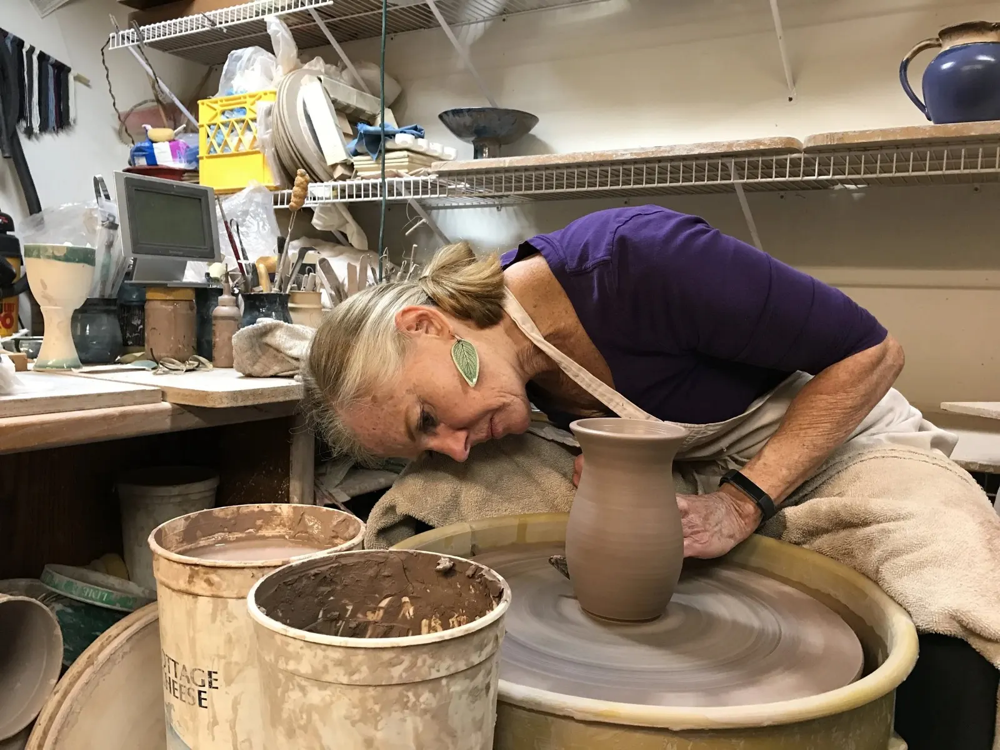
Deep in the mud since 1992My work consists of mostly functional items for the home and garden created in high-fired stoneware and porcelain. I encourage collectors of my pieces to enhance their lives by using art daily.
Call or visit: 4020 E 200 N, Lafayette, IN 47905. Hours by appointment.
It started with red clay in a North Carolina backyard.
I was born and raised in North Carolina, where at a young age I discovered my medium while playing with the indigenous red clay in my backyard.
I set my art on the back burner while I pursued a botany degree at UNC Chapel Hill and moved to Indiana to garden and raise my family. In 1992 I revisited clay and have been deep in the mud ever since.
My love of plants and nature inspires my choice of motifs and glaze colors.
“Earth without art is just ‘eh’.”
Demetri Martin
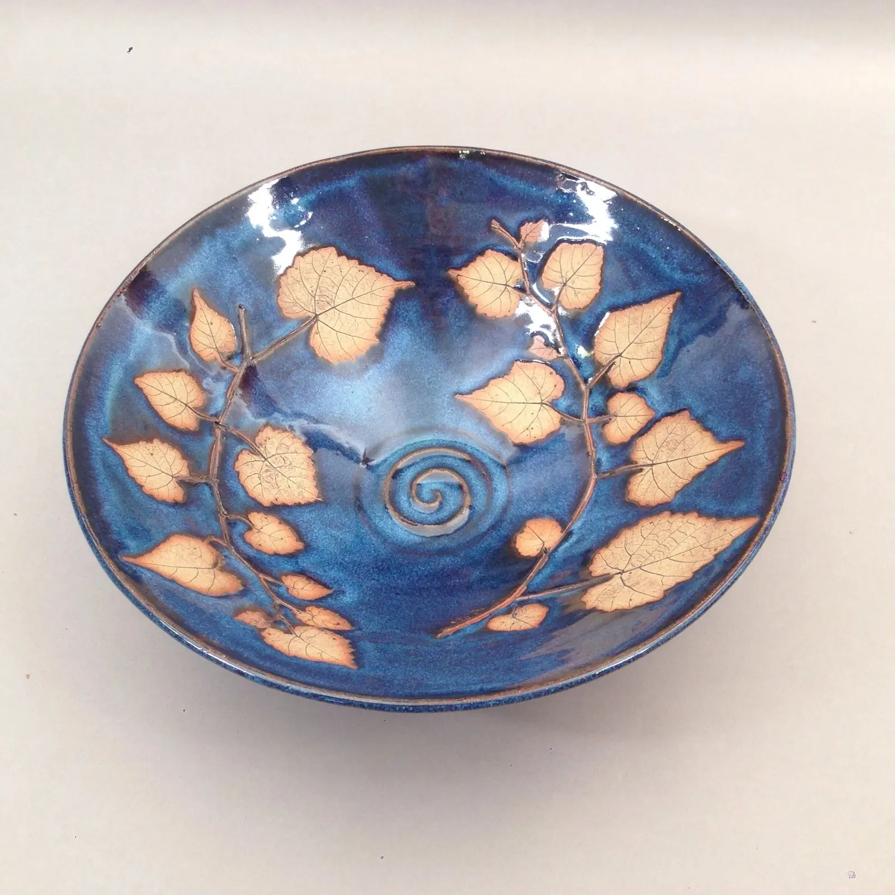
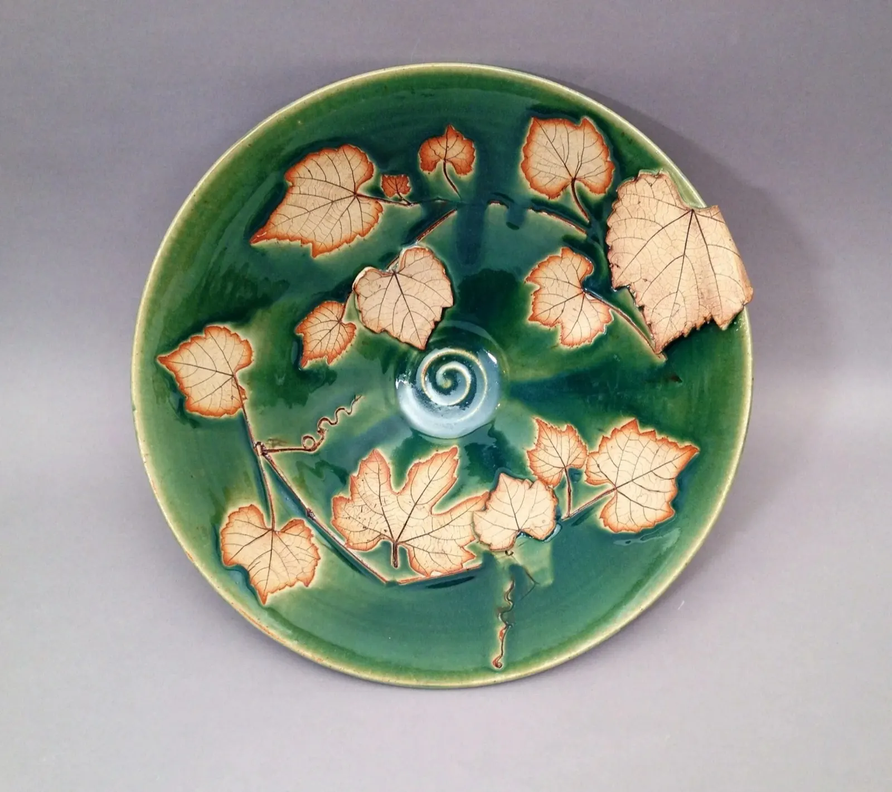
How a real leaf ends up in the clay.
I combine two of my favorite things, plants and clay, to create beautiful, useful works of art.
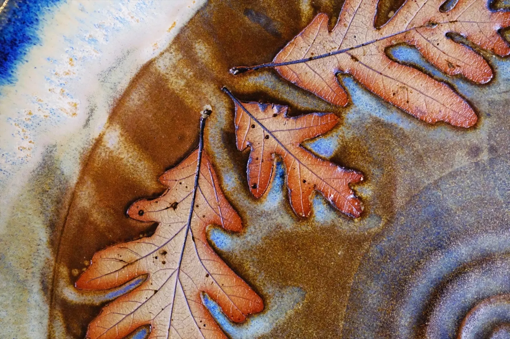
Oak leaf impressions- The leaf goes inDuring the forming process, a real leaf is impressed, reverse side down, into the wet stoneware clay with a rolling pin or brayer.
- The leaf comes outThe leaves are removed before the bisque firing, and any bits that are left burn off in the kiln.
- Iron oxide and waxAfter the bisque firing, the leaf impression is stained with red iron oxide and covered with wax resist.
- GlazeThe piece is dipped into liquid glaze, and the impression is cleaned of any dots of glaze.
- The last firingFired in an electric kiln to 2300 degrees.
For the home and garden.
Teapots and mugs, pitchers and tumblers, dinnerware, yarn bowls, raku and wall hangings, in jade, sky blue, grape and caramel glazes.
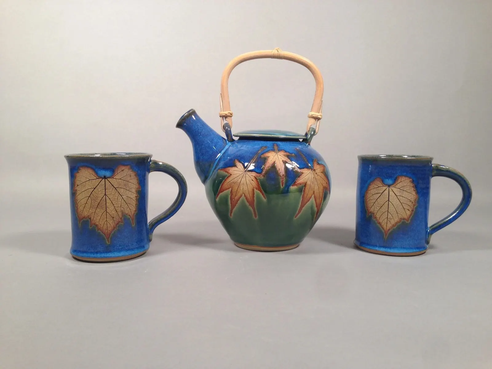
Teapot and Mugs, Jade and Sky Blue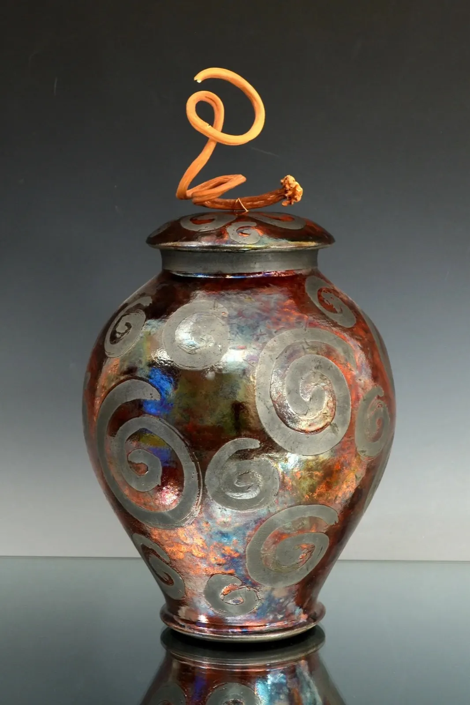
Raku Urn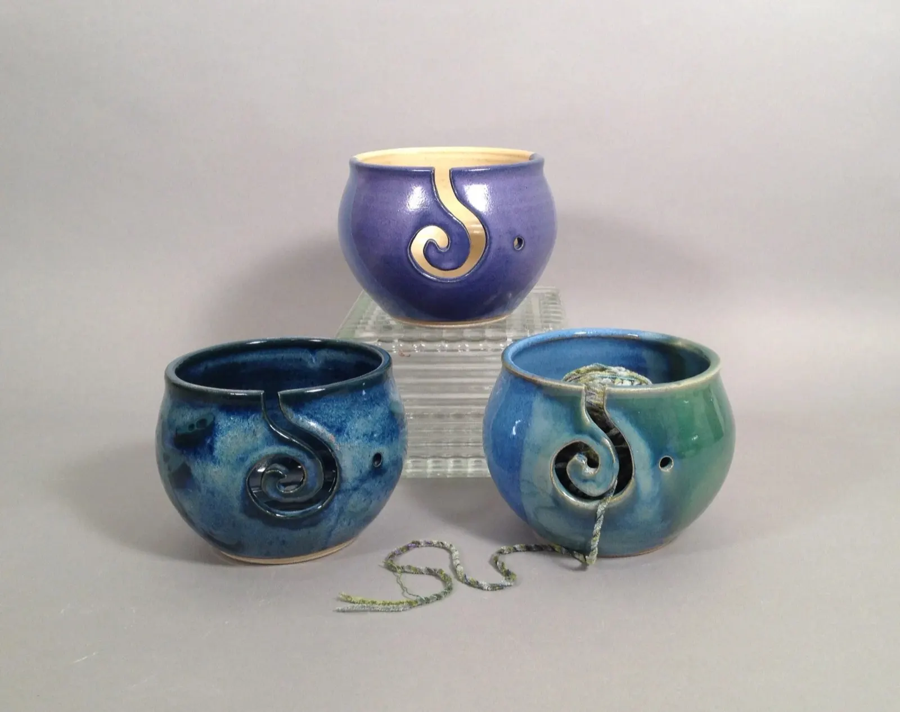
Yarn Bowls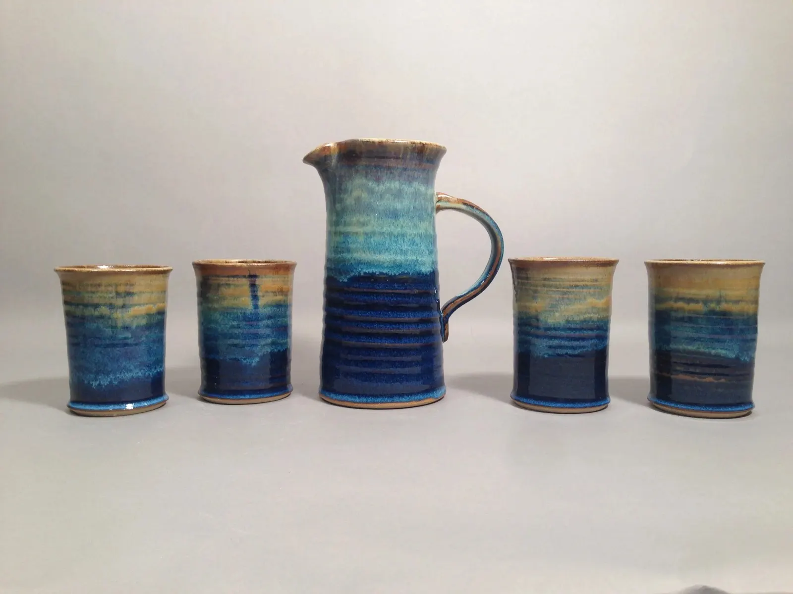
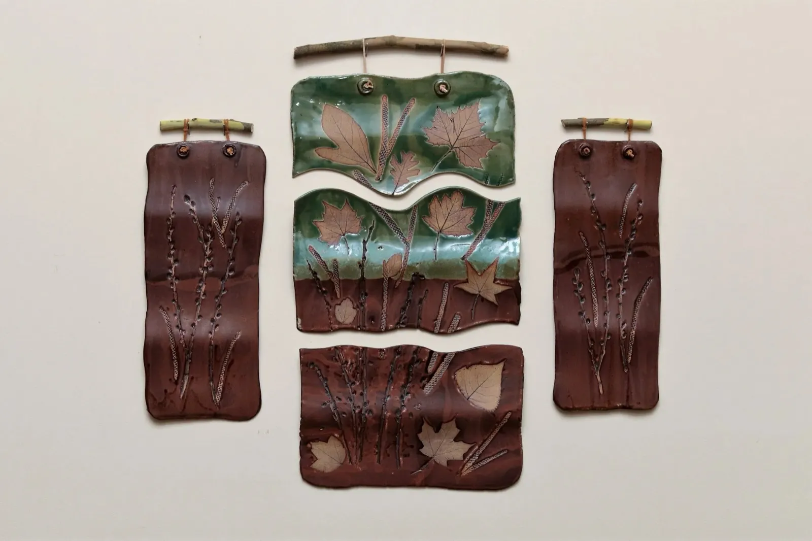
And a little whimsy.
Wacky Trees, Bromeliad Babes and Boys, snowflake and angel ornaments.
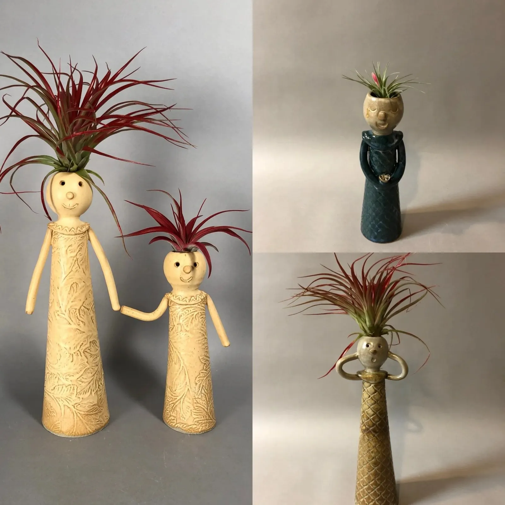
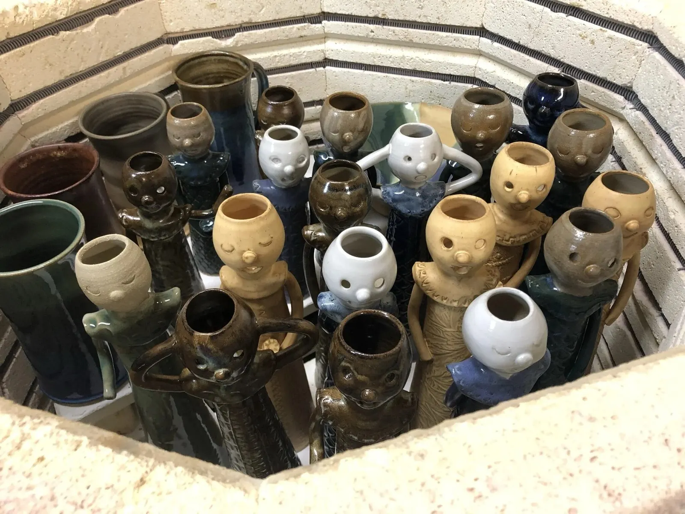
Made to be used.
My stoneware is fired to temperatures ranging from 1800ºF to 2300ºF. High temperature alone shouldn't damage pottery; sudden, uneven temperatures can.
- Dishwasher
- My pottery is dishwasher safe.
- Oven
- Place the pottery in a room temperature oven, then turn up the heat. Broiler use is never recommended.
- Microwave
- Heat food in microwave-safe dishes, then transfer it to your handcrafted piece.
- Stove top
- My handmade pottery cannot be used on the stove top.
Find the pottery in person.
I participate in several art shows each year, and the studio is open by appointment. I'm a partner of Artists' Own Gallery and a member of Wabash Valley Potters.
Call or visit
4020 E 200 N
Lafayette, IN 47905